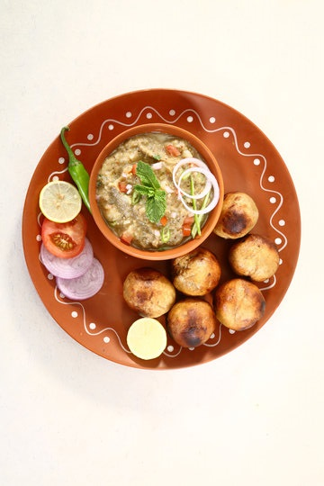

Litti Chokha
For Litti:
- 2 cups whole wheat flour
- 1 cup sattu (roasted gram flour)
- 2 tablespoons ghee (clarified butter)
- 1 teaspoon ajwain seeds (carom seeds)
- 1 teaspoon kalonji seeds (nigella seeds)
- 1 teaspoon chopped green chilies
- 1 tablespoon chopped garlic
- 1 tablespoon chopped ginger
- 1 tablespoon lemon juice
- 2 tablespoons mustard oil
- Salt to taste
- Water (for kneading)
For Chokha:
- 2 large potatoes, boiled and mashed
- 1 large eggplant (baingan), roasted and mashed
- 2 large tomatoes, roasted and mashed
- 1 onion, finely chopped
- 2-3 green chilies, finely chopped
- 1 tablespoon chopped garlic
- 1 tablespoon chopped ginger
- 2 tablespoons mustard oil
- 1 teaspoon cumin seeds
- 1 teaspoon red chili powder
- 1 teaspoon garam masala
- Salt to taste
- Fresh coriander leaves for garnish
- Lemon wedges for serving
Ingredients of Panner Tikka
- For Litti:
- In a mixing bowl, combine the whole wheat flour, 1 tablespoon ghee, ajwain seeds, kalonji seeds, chopped green chilies,
chopped garlic, chopped ginger, lemon juice, mustard oil, and salt. - Gradually add water and knead the mixture into a firm dough. Cover it and let it rest for about 30 minutes.
- In a mixing bowl, combine the whole wheat flour, 1 tablespoon ghee, ajwain seeds, kalonji seeds, chopped green chilies,
- For Chokha:
- Roast the eggplant and tomatoes on an open flame or in an oven until the skin is charred and the insides become soft.
- Peel off the charred skin from the eggplant and tomatoes. Mash them together in a bowl and set aside.
- In a pan, heat 2 tablespoons of mustard oil. Add cumin seeds and let them splutter.
- Add chopped onions, green chilies, chopped garlic, and chopped ginger. Saute until the onions become translucent.
- Add the mashed eggplant and tomatoes to the pan. Stir in red chili powder, garam masala, and salt. Mix everything well and
cook for a few minutes. Garnish with fresh coriander leaves.
- Assembling Litti:
- Divide the rested dough into equal-sized balls.
- Flatten each ball and place a spoonful of sattu filling (made by mixing sattu with chopped onions, green chilies, mustard oil, and salt)
in the center. - Enclose the filling by bringing the edges of the flattened dough together, shaping it into a round ball again.
- Roasting Litti:
- Preheat your oven to 180°C (356°F). Alternatively, you can roast litti over charcoal for an authentic smoky flavor.
- Place the stuffed litti on a baking tray and brush them with ghee on the top surface.
- Bake the litti in the preheated oven for about 25-30 minutes or until they turn golden brown and crispy.
- Serving:
- Serve the hot litti with chokha, along with lemon wedges on the side.
- Enjoy the delightful flavors of Litti Chokha!
Recipe
